Early-purple Orchid
Orchis mascula
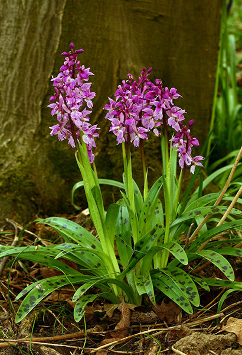
The Early-purple Orchid is one of the earliest flowering orchids in Britain and Ireland and its appearance heralds a new orchid season. It is widely distributed and occurs in both woodland and in more open unimproved grassland habitats, including roadsides. In woodland it favours the edges and areas of recent coppice, where there is more abundant light. It is slow to colonise new areas and is regarded as a good indicator of ancient woodland.
The flowering period extends from early April into June, varying with the timing of the season. The vegetative rosettes appear early in winter and in some areas they can be a target for browsing deer. In general the leaves are heavily spotted, but occasional plants occur without the characteristic marking. As its common name suggests, the flowers are usually a shade of purple, but pink and white flowers are present in many populations.
Key features
- Plant
- 10–40 cm, occasionally 50–60 cm; stem flushed purple towards the top.
- Leaves
- 3–8 long lanceolate-oval in a basal rosette with 2–3 smaller leaves sheathing the stem; glossy green and usually variably spotted.
- Bracts
- Lanceolate, clasping the ovary; variably purple.
- Flowers
- 10–50 flowers; upper sepal and petals form a hood, lateral sepals erect; lip three-lobed and directed downwards; spur 10–12 mm, bent upwards. Usually various shades of purple with a paler white-yellow base to the lip marked with purple spots; occasionally pink or white.
Distribution
Click the map to view the latest BSBI distribution records for the Early-purple Orchid.
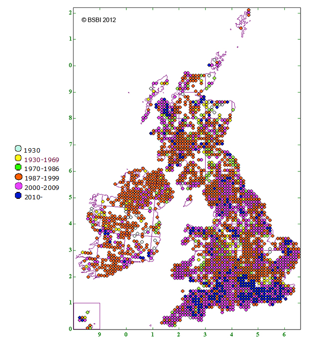
Photographs


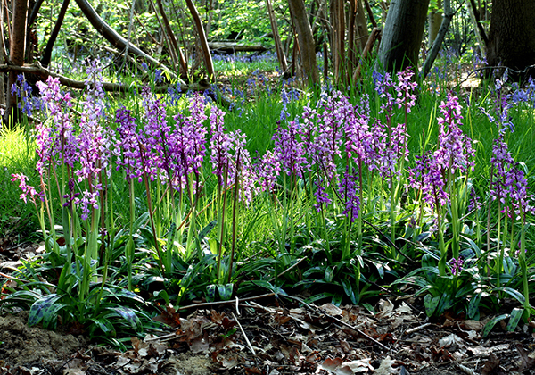

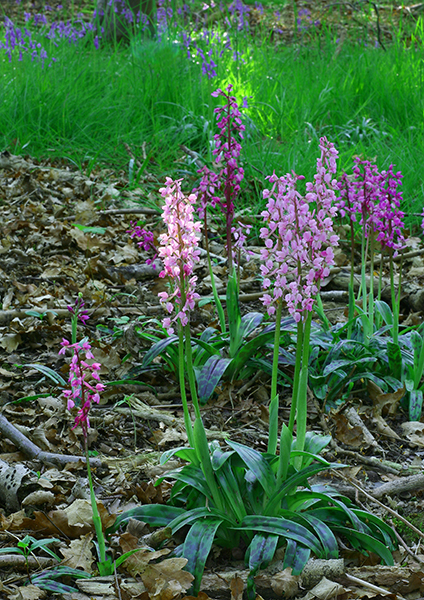

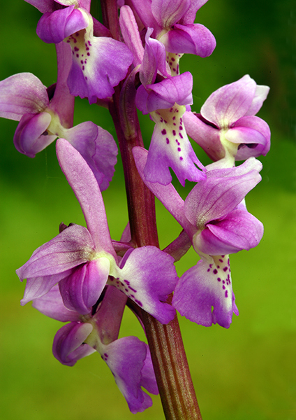

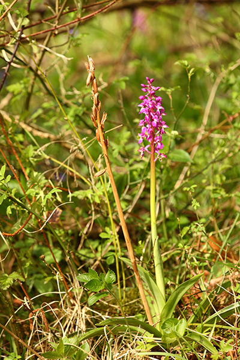

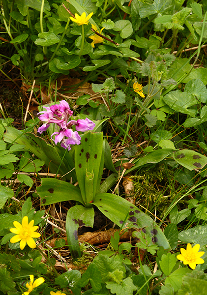

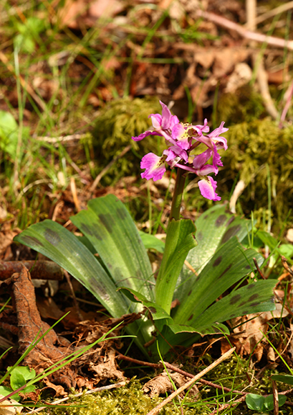

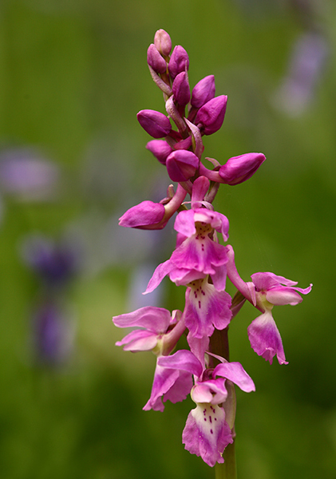

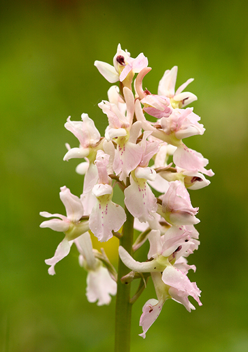

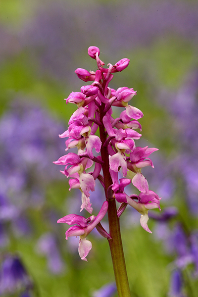
Pollination
The Early-purple Orchid is allogamous and depends on insect visitors for pollination. It is a deceit orchid that attracts insects without offering a reward and does not produce nectar. The most widely accepted view is that the main pollinators are various species of bumblebee; the flowers are especially attractive to naïve queens early in their flight period. The efficiency of seed set varies between populations, probably in relation to the amount of insect activity.
Taxonomy & hybrids
The Early-purple Orchid belongs to the subgenus Masculae and is defined as the subspecies Orchis mascula subsp. mascula.
Hybrids with the Green-winged Orchid Anacamptis morio (Orchis × morioides) and the Lady Orchid Orchis purpurea (Orchis × wilmsii) have been described, but they are regarded as doubtful by some Orchis experts (Kretzschmar et al., 2007).
Articles in JHOS
- Mike Gasson (2013) Pollination in the Early-purple Orchid. JHOS 10: 60–66.
Texts and photographs on this page are subject to international copyright legislation. Copyright belongs to the contributing members of the Hardy Orchid Society. Image copyright remains with the individual photographer (Mike Gasson). Material cannot be reproduced without permission from the copyright holder.